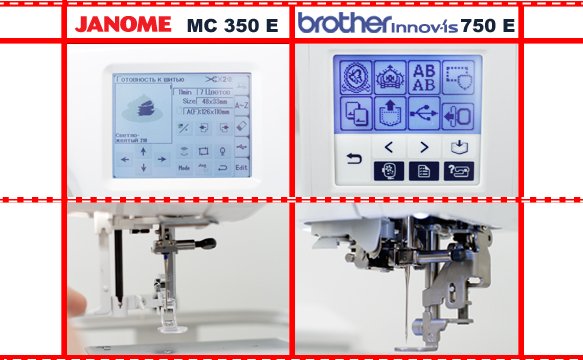
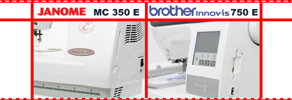

|
Приветствуем любителей вышивания, сегодняшний обзор именно для Вас! Сегодня мы сравним две вышивальные машины класса low японских фирм Janome и Brother. Выбор в этой нише сделать отнюдь не просто, и покупатели часто ориентируются только на свои пристрастия. Постараемся помочь Вам заглянуть чуть глубже, для не легкого решения в пользу какой-то из машин. |
|
Говоря о внешнем виде и эргономике тех, что попали сегодня под наши пристальные взгляды, нельзя пройти мимо удобных нитевдевателей и системы заправки нити, фирменной drop-in, да ко всему прочему позиционирование иглы у Brother INNOV-IS 750E. На что Memory Craft 350E может ответить лишь более увеличенной плоскостью шитья. Сегодня мы немного поменяем классический стиль наших предыдущих тест-драйвов и преподнесем информацию в виде прямых сравнений, а так же добавим формат FAQ(часто задаваемые вопросы). |
|  |
|
Оба сравниваемых имеют сенсорные дисплеи, немного отличающиеся по размерам. В этом пункте лидирует Janome (94.5х74мм), имеющая еще и возможность градации своего серого цвета, аж в 16 тонах. А у Brother (70х45мм) подсветка выполнена в приятном синем цвете, вот, пожалуй, и все что можно отметить. Что касается функций редактирования вышивок, то они во многом схожи по своей направленности, с различными диапазонами регулировок. Например, обе имеют индикаторы времени и количества стежков, возможность поворота вышивки на 1 и 45 градусов у Janome и большим разбросом у Brother 1/10/90 градусов, возможность масштабирования рисунка отличается не значительно и малозаметно в быту, 90-120% против 80-120%, соответственно. |
|
Эту часть посвятим самым часто задаваемым вопросам будущих обладателей «вышивалок». Таких вопросов много, постараемся на них ответить…
Q: Какой максимальный размер вышивки? Какой комплект пялец?
Q: Какая скрость шитья?
Q: Какие внешние носители и соединения?
Q: Какие встроенные вышивки и программы? Какой формат вышивки? |
|  |
| Стоит поговорить и о программном обеспечении, что касается Бразера, то его ПО PE Design 8.0, которое поддерживает форматы: jef, vip, shv, sew, csd, xxx, dst, pes-подходит и к Мемори крафт. Да и аксессуары к 750 найти легче, так как существует обширное представительство на территории стран СНГ. |
В данной статье мы сравнили вышивальные машины Janome Memory Craft 350E и Brother INNOV-IS 750E (NV 750 E). Получить информацию о сравнении швейных машин и оверлоков вы можете на странице «обзоры». Сайт регулярно обновляется и дополняется новыми обзорами, не пропустите!